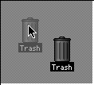

|
|
Since Drag Manager 1.0, two new calls have been added and three
new Gestalt response bits have been defined.
One new call obtains the drag highlight color. The other enables
the user to drag translucent images. (For an example of the
translucent dragging effect, see the Finder in System 7.5.3.)
The new Gestalt bits describe Text Services Manager window
compatibility, PowerPC library availability, and the availability of
translucent dragging.
This Technote is intended for Macintosh developers who need to
take advantage of these new features.
Updated: [Mar 1 1997]
|
Detecting New Drag Manager Behavior
There are three new bits defined in the Gestalt response value for
the gestaltDragMgrAttr selector code. If your application uses the
Drag Manager, it should already be calling Gestalt with this selector
code and testing the gestaltDragMgrPresent bit; testing these
additional bits should be similar.
gestaltDragMgrFloatingWind
Denotes support for Text Services Manager floating windows.
In order to receive a drag, such windows must have their own
handlers; they cannot rely on a global handler. When this bit
is not set, neither sending nor receiving drags will work properly.
gestaltPPCDragLibPresent
Denotes whether there is a PowerPC CFM shared library
available for Drag Manager. PowerPC applications should attempt
to establish a connection (perhaps implicitly via a "weak" link) to the
library DragLib before testing this bit.
gestaltDragMgrHasImageSupport
Denotes the availability of SetDragImage and GetDragHiliteColor.
Although support for translucency is limited by hardware (see below),
it is safe for your application to call SetDragImage as long as Gestalt
indicates that it is available.
Back to top
Translucent Dragging -- Why & When
Before Color QuickDraw, highlighting graphics on the Macintosh was
restricted to inversion, a quick and effective operation. Color
QuickDraw introduced a highlighting scheme for color images based on
simple color substitution. On Macs with PowerPC processors, running
System 7.5.3, it has become possible for system software to further
enhance the user experience.
The User Experience of Translucent Dragging
In Figure 1, the user has clicked on the trash icon, highlighting
it. Then the user has held down the mouse button, dragging the
translucent image of the icon up and to the left on the desktop.

Figure 1: Translucent dragging on the desktop
|
Note:
If you're looking at this document in black and white, you'll
have to imagine the lower right image to be opaque as normal and
the upper left image to be somewhat less visually substantial --
in a word, translucent.
|
Apple is actively working to find a practical use for translucent
dragging.
Requirements for Translucent Dragging
Translucent dragging is only supported on Macintosh computers with
PowerPC processors. There are several reasons for this, specifically
an improved PowerPC-native Color QuickDraw, and the enhanced
calculation and execution speed provided by PowerPC processors.
In addition to PowerPC-only support, there are other requirements
for translucency, including the following:
- Monitors must be set to display at least 8 bits of color.
- 8-bit monitors on multiple-monitor systems must have color
tables containing only colors that can be saved and restored using
a 24-bit color space.
- 8-bit monitors can't have color tables containing animated
entries or a narrow range of colors.
- Video mirroring must be disabled.
If the Drag Manager determines that translucency can't be done, it
will revert to inverted outline dragging for one or more screens.
Back to top
Appropriate Uses of Translucent Dragging
Translucency is not appropriate for every drag. Applications
should use the effect sparingly, and, in general, only small,
single-item graphics such as icons should be dragged translucently.
Large or multi-part images such as pictures or groups of icons may
become distracting for users. If the image is too large, a user's
attention may be diverted from the task of finding the destination of
the drag.
In addition, large images may not drag smoothly. Even two icons
rendered in a PixMap constitute a large image if those icons are far
apart within the PixMap.
Text and some other non-graphic elements are also not good
candidates for translucent dragging. Dragging text may appear
cluttered or too busy on the screen, and thus become more distracting
for the user. Use the older outline dragging for these drags.
|
Important:
While the Drag Manager will not allow translucency when the
environment does not permit it, such as on 8-bit monitors with
altered color tables, it can't prevent translucency from being
used when it is inappropriate. Design your program to use
translucent dragging only when it's appropriate. Consider
following the example of the Finder and combining dragging of a
small image with outlines for other items in the drag.
|
Back to top
Reference
DragImageFlags
DragImageFlags is a 32-bit set of flags used to specify the
appearance of a translucent drag. Here are a type declaration and
valid values for DragImageFlags:
typedef unsigned long DragImageFlags;
enum
{
dragStandardImage = 0x00000000,
dragDarkImage = 0x00000001,
dragDarkerImage = 0x00000002,
dragOpaqueImage = 0x00000003,
dragRegionAndImage = 0x00000010
};
|
Four darkness values are permitted, ranging from the standard,
Apple-recommended darkness used by Finder (approximately 35% blending
of the image with the background) to a near-opaque setting. The
caller can add the constant dragRegionAndImage to the darkness value
to specify that the outline region passed to TrackDrag should be
drawn on the screen in addition to the translucent image. Without the
dragRegionAndImage constant, the Drag Manager draws the outline only
on screens that cannot support translucency.
SetDragImage
SetDragImage associates an image with a DragReference. Upon
TrackDrag, a translucent version of the image will follow the cursor.
SetDragImage is defined as follows:
pascal OSErr SetDragImage ( DragReference theDragRef,
PixMapHandle imagePixMap,
RgnHandle imageRgn,
Point imageOffsetPt,
DragImageFlags theImageFlags );
imagePixMap A standard PixMapHandle. The Drag Manager will
temporarily lock the PixMapHandle during the drag
if necessary. Not copied into the DragReference. See below.
imageRgn A mask for the PixMap describing the portion of
the PixMap which contains the image. Pass nil for
imageRgn if the entire rectangular PixMap, including
white space, is to be dragged. Not copied into the DragReference. See below.
imageOffsetPt The offset required to move the imagePixMap to the
global coordinates where the image initially appears.
If imageOffsetPt is {0,0}, the imagePixMap should
already be in global coordinates.
theImageFlags A set of drag image flags as described above.
|
DESCRIPTION
To determine if SetDragImage is available, call Gestalt with the
selector gestaltDragMgrAttr. If the gestaltDragMgrHasImageSupport bit
of the response is set, the SetDragImage call can be made safely.
SetDragImage should be called by the sending application prior to
calling TrackDrag. Prior to calling SetDragImage, the application
should draw into imagePixMap a solid, opaque image. The Drag Manager
will provide the translucency effects. Typically, your application
will obtain imagePixMap by calling GetGWorldPixMap and supplying a
GWorld into which your app has drawn the image.
To allow the Drag Manager to analyze the PixMap's colors in order
to determine if it can be rendered on the available screens, Apple
recommends using an 8-bit GWorld for the imagePixMap.
SPECIAL CONSIDERATIONS
SetDragImage installs a custom drawing procedure to do the
translucent drawing. Applications calling SetDragImage should not
also call SetDragDrawingProc for the same drag.
SetDragImage does not copy the imagePixMap and imageRgn parameter
data. Until TrackDrag completes, you must ensure the data to which
these parameters refer continues to exist.
ERRORS
Four new result codes have been defined for SetDragImage:
enum
{
unsupportedForPlatformErr = -1858,
// call is for PowerPC only
noSuitableDisplaysErr = -1859,
// no displays support translucency
badImageRgnErr = -1860,
// bad translucent image region
badImageErr = -1861
// bad translucent image PixMap
};
|
GetDragHiliteColor
To determine the color the Drag Manager will use for a particular
window, call GetDragHiliteColor. GetDragHiliteColor can safely be
called when the gestaltDragMgrHasImageSupport bit is set in the Gestalt
response to the selector gestaltDragMgrAttr.
pascal OSErr GetDragHiliteColor (WindowPtr window, RGBColor *color);
SPECIAL CONSIDERATIONS
The Drag Manager chooses an appropriate color for hilighting,
depending on the colors available in the color table for the window.
Limitations on the choice of available colors are described in
Macintosh Technical Note TB 33 - Color,
Windows and 7.0.
Back to top
Summary
The new Drag Manager Gestalt response bits have been defined. Test
the gestaltDragMgrFloatingWind bit to determine the availability of
Text Services Manager Support. Test the gestaltPPCDragLibPresent bit
to determine whether the CFM library DragLib has been prepared. Test
the gestaltDragMgrHasImageSupport bit to determine whether
translucent dragging is supported.
Two new Drag Manager calls enable your app to obtain the drag
highlight color and perform translucent dragging. Use SetDragImage to
specify a PixMap to be transformed into a translucent image for
display during dragging. Be careful to observe the human interface
principles outlined in this Note. Use GetDragHiliteColor to obtain
the color used for drag highlighting.
Back to top
References
- Drag Manager Programmer's Guide
- Inside Macintosh: Imaging with QuickDraw
Back to top
Appendix A: Interfaces and Libraries
As of June 6, 1996, there is no constant for
gestaltDragMgrHasImageSupport defined in <Drag.h> and there are no
interfaces or CFM library glue for calling SetDragImage and
GetDragHiliteColor. However, in Appendix A1, we provide interfaces you can
use in C and C++ programs, and in Appendix A2, we provide a library
you can compile with a C or C++ compiler and call from C, C++, and
Pascal. You need to compile and link the library module into your
program if your program is CFM-based (PowerPC or CFM-68K). If you
compile the library source into a non-CFM project accidentally, it
will automatically render itself invisible.
Back to top
Appendix A1: "DragManagerAdditions.h"
#pragma once
#ifndef __DRAG__
# include <Drag.h>
#endif
enum
{
_DragDispatch = 0xABED
};
enum
{
gestaltDragMgrHasImageSupport = 3
};
enum
{
unsupportedForPlatformErr = -1858,
// call is for PowerPC only
noSuitableDisplaysErr = -1859,
// no displays support translucency
badImageRgnErr = -1860,
// bad translucent image region
badImageErr = -1861
// bad translucent image PixMap
};
typedef unsigned long DragImageFlags;
enum
{
dragStandardImage = 0x00000000,
dragDarkImage = 0x00000001,
dragDarkerImage = 0x00000002,
dragOpaqueImage = 0x00000003,
dragRegionAndImage = 0x00000010
};
#ifdef __cplusplus
extern "C" {
#endif
pascal OSErr SetDragImage ( DragReference theDragRef,
PixMapHandle imagePixMap,
RgnHandle imageRgn,
Point imageOffsetPt,
DragImageFlags theImageFlags )
TWOWORDINLINE (0x7027, 0xABED);
pascal OSErr GetDragHiliteColor
(WindowPtr window, RGBColor *color)
TWOWORDINLINE (0x7026, 0xABED);
#ifdef __cplusplus
}
#endif
|
Back to top
Appendix A2: "DragManagerAdditions.c"
#define SystemSevenFiveOrLater 1
#define CGLUESUPPORTED 0
#define OLDROUTINENAMES 0
#define OLDROUTINELOCATIONS 0
#define STRICT_WINDOWS 1
#ifndef __CONDITIONALMACROS__
# include <ConditionalMacros.h>
#endif
#if GENERATINGCFM
//
// If we're not generating CFM, then assume the
// 68K inlines in the headers apply instead.
//
#include "DragManagerAdditions.h"
// if missing, see Appendix A1, Technote 1043
pascal OSErr SetDragImage ( DragReference theDragRef,
PixMapHandle imagePixMap,
RgnHandle imageRgn,
Point imageOffsetPt,
DragImageFlags theImageFlags )
{
enum
{
uppSetDragImageInfo = kD0DispatchedPascalStackBased
| RESULT_SIZE (SIZE_CODE (sizeof(OSErr)))
| DISPATCHED_STACK_ROUTINE_SELECTOR_SIZE
(SIZE_CODE (sizeof (unsigned long)))
| DISPATCHED_STACK_ROUTINE_PARAMETER
(1, SIZE_CODE (sizeof (theDragRef)))
| DISPATCHED_STACK_ROUTINE_PARAMETER
(2, SIZE_CODE (sizeof (imagePixMap)))
| DISPATCHED_STACK_ROUTINE_PARAMETER
(3, SIZE_CODE (sizeof (imageRgn)))
| DISPATCHED_STACK_ROUTINE_PARAMETER
(4, SIZE_CODE (sizeof (imageOffsetPt)))
| DISPATCHED_STACK_ROUTINE_PARAMETER
(5, SIZE_CODE (sizeof (theImageFlags)))
};
return CallUniversalProc (
GetToolTrapAddress (_DragDispatch),
uppSetDragImageInfo, 0x27L, theDragRef, imagePixMap,
imageRgn, imageOffsetPt, theImageFlags);
}
pascal OSErr GetDragHiliteColor (WindowPtr window, RGBColor *color)
{
enum
{
uppGetDragHiliteColorInfo =
kD0DispatchedPascalStackBased
| RESULT_SIZE (SIZE_CODE (sizeof(OSErr)))
| DISPATCHED_STACK_ROUTINE_SELECTOR_SIZE
(SIZE_CODE (sizeof (unsigned long)))
| DISPATCHED_STACK_ROUTINE_PARAMETER
(1, SIZE_CODE (sizeof (window)))
| DISPATCHED_STACK_ROUTINE_PARAMETER
(2, SIZE_CODE (sizeof (color)))
};
return CallUniversalProc (
GetToolTrapAddress (_DragDispatch),
uppGetDragHiliteColorInfo, 0x26L, window, color);
}
#endif // GENERATINGCFM
|
Back to top
Appendix B: Sample Code for Performing a Translucent Drag with a
Picture
#ifndef __QDOFFSCREEN__
# include <QDOffscreen.h>
#endif
#ifndef __GESTALT__
# include <Gestalt.h>
#endif
#ifndef __EVENTS__
# include <Events.h>
#endif
#ifndef __WINDOWS__
# include <Windows.h>
#endif
#ifndef __QUICKDRAW__
# include <QuickDraw.h>
#endif
#include "TranslucentDragSample.h"
// just a prototype for MyDoPictureDrag
#include "DragManagerAdditions.h"
// if missing, see Appendix A1, Technote 1043
pascal OSErr MyDoPictureDrag ( const EventRecord *theEvent,
WindowPtr theWindow,
PicHandle thePicture )
{
OSErr err;
DragReference theDrag;
GWorldPtr imageGWorld;
PixMapHandle imagePixMap;
Rect imageRect;
Rect dragBounds;
RgnHandle dragRgn;
RgnHandle tempRgn;
RgnHandle imageRgn;
RgnHandle contRgn;
ItemReference theItem;
char saveHState;
long response;
CGrafPtr savePort;
Point offsetPt;
GDHandle saveDevice;
//
// initialize values to allow for safe and easy
// clean-up
//
theDrag = 0;
imageGWorld = nil;
dragRgn = nil;
tempRgn = nil;
imageRgn = nil;
contRgn = nil;
GetGWorld(&savePort, &saveDevice);
//
// create a new drag
//
err = NewDrag(&theDrag);
if (err != noErr) goto Bail;
//
// add the picture data to the drag
//
saveHState = HGetState((Handle) thePicture);
HLock ((Handle) thePicture);
theItem = 1;
err = AddDragItemFlavor(theDrag, theItem, 'PICT',
*thePicture, GetHandleSize((Handle) thePicture), 0);
HSetState ((Handle) thePicture, saveHState);
if (err != noErr) goto Bail;
//
// get the bounding rect of the picture and relocate
// it to 0,0
//
imageRect = (**thePicture).picFrame;
SetPt (&offsetPt, imageRect.left, imageRect.top);
OffsetRect (&imageRect, -imageRect.left, -imageRect.top);
//
// since our imageRect is based at 0,0, find
// the global offset of the image
//
SetPort (theWindow);
LocalToGlobal (&offsetPt);
SetPort ((GrafPtr) savePort);
//
// check if the Drag Manager supports image dragging
//
err = Gestalt(gestaltDragMgrAttr, &response);
if (err == noErr && (response & (1L << gestaltDragMgrHasImageSupport)))
{
//
// allocate a GWorld to hold the image; it is
// okay if the pixels are in the app heap or
// in temp memory
//
err = NewGWorld
(&imageGWorld, 8, &imageRect, nil, nil, useTempMem);
if (err)
err = NewGWorld (&imageGWorld, 8, &imageRect, nil, nil, 0);
if (err == noErr)
{
//
// get the pixel map from the GWorld for:
//
// [1] LockPixels before drawing
// [2] SetDragImage
//
imagePixMap = GetGWorldPixMap(imageGWorld);
// draw the picture into the GWorld
SetGWorld(imageGWorld, nil);
(void) LockPixels(imagePixMap);
// LockPixels always returns true for
// non-purgeable pixels
EraseRect (&imageGWorld->portRect);
DrawPicture(thePicture, &imageRect;));
UnlockPixels(imagePixMap);
SetGWorld(savePort, saveDevice);
//
// allocate and set the region that
// identifies the part of the image
// being dragged
//
imageRgn = NewRgn();
if (imageRgn == nil)
err = MemError ( );
else
{
RectRgn (imageRgn, &imageRect);
// attach the image to the drag
err = SetDragImage (theDrag, imagePixMap, imageRgn,
offsetPt, dragStandardImage);
}
}
//
// Translucency is not critical, so errors which
// occur during any of the enclosed code are not fatal;
// we've only bothered to assign 'err' to see its value
// in the debugger.
//
err = noErr;
}
//
// set the bounds and region for the drag using the
// window's content rectangle and the imageRect in
// its global location
//
dragBounds = imageRect;
OffsetRect(&dragBounds, offsetPt.h, offsetPt.v);
contRgn = NewRgn ( );
if (contRgn == nil)
{
err = MemError ( );
goto Bail;
}
GetWindowContentRgn (theWindow,contRgn);
SectRect (&((**contRgn).rgnBBox), &dragBounds, &dragBounds);
err = SetDragItemBounds(theDrag, theItem, &dragBounds);
if (err != noErr) goto Bail;
//
// make a drag region outlining the image for screens
// on which translucency isn't possible
//
dragRgn = NewRgn();
if (dragRgn == nil)
{
err = MemError ( );
goto Bail;
}
RectRgn(dragRgn, &dragBounds);
tempRgn = NewRgn();
if (tempRgn == nil)
{
err = MemError ( );
goto Bail;
}
CopyRgn(dragRgn, tempRgn);
InsetRgn(tempRgn, 1, 1);
DiffRgn(dragRgn, tempRgn, dragRgn);
//
// finally, do the drag
//
err = TrackDrag(theDrag, theEvent, dragRgn);
Bail:
if (theDrag)(void) DisposeDrag (theDrag);
if (imageGWorld) DisposeGWorld (imageGWorld);
if (dragRgn) DisposeRgn (dragRgn);
if (tempRgn) DisposeRgn (tempRgn);
if (imageRgn) DisposeRgn (imageRgn);
if (contRgn) DisposeRgn (contRgn);
return err;
}
|
Back to top
Change History
Add this section if there are changes. If you're writing
a new technote, then you can remove this section.
|
01-May-1996
|
Originally published May 1996.
|
|
01-June-1996
|
Added information on Gestalt response bits.
Added CFM interfaces and libraries.
Improved error-handling in sample code.
|
|
01-August-1996
|
Added warning to preserve parameters to SetDragImage.
|
|
01-March-1997
|
Refreshed HTML version of sample code from qualifying project.
Made descriptions of gestaltDragMgrHasImageSupport consistent.
Used the correct name of GetDragHiliteColor in all cases.
Changed some cosmetics in the description of Gestalt bits.
|
Back to top
Downloadables
|

|
Acrobat version of this Note (72K).
|
Download
|
Back to top
|